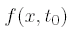
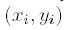
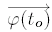
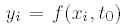
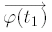
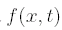

3.2 Generación automática de tablas de control
En el prototipo desarrollado, las tablas de control se generan automáticamente,
a partir de un modelo de propagación de onda. El algoritmo empleado
se describe a continuación (figura ![[*]](crossref.png) ). Partimos de
una onda en el instante inicial,
). Partimos de
una onda en el instante inicial, 
(en el dibujo se utilizan
ondas sinusoidales pero podrían tener cualquier otra forma) y de un
modelo de gusano en el que todas sus articulaciones están sobre el
eje x (estado inicial. Fig -1). Sean 
las coordenadas de la articulación i-ésima, en ese instante. El vector
de posición angular para ese instante,

,
se calcula haciendo que todas las articulaciones cumplan la función
de onda , de manera que

, siempre
manteniéndose la restricción de que la distancia entre dos articulaciones
sea L. Es decir, que el gusano se ``ajusta'' a la función
de onda (-2). A continuación se desplaza la onda
(instante t1. Figura -3) y se vuelve a realizar
el ``ajuste'', obteniéndose

(Figura -4). Se repiten los puntos 3 y 4 hasta que
la onda llegue a su fase inicial. Al cabo de m instantes de
tiempo, se tienen todos los vectores que componen la tabla de control.
Figure:
Algoritmo empleado para generar automáticamente las tablas de control.
1) Estado inicial. 2) Las articulaciones cumplen la ecuación de la
onda (el gusano se ``ajusta'' a la onda). 3) La onda se desplaza.
4) Se vuelve a ``ajustar'' el gusano a la onda
|
|
Mediante este algoritmo, se obtienen las tablas de control, con independencia
de la forma de la onda usada. Se puede emplear para cualquier onda

. Las pruebas de locomoción las hemos realizado utilizando
ondas sinusoidales y semiondas (usando sólo la parte positiva de un
periodo de una onda sinusoidal).
Juan Gonzalez
2004-10-05